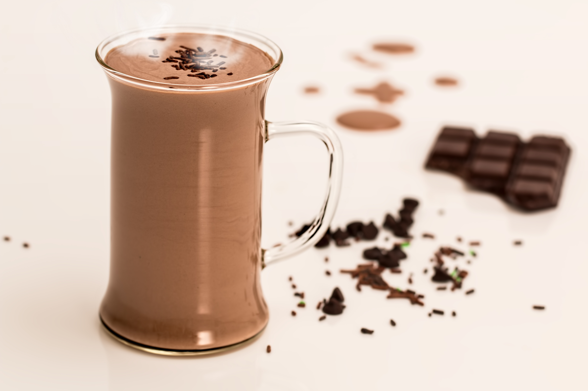

Hot Chocolate
Home

Description
Rich, creamy and dairy-free, made with real cocoa.
Ingredients
- 2 cups oat or soy milk
- 2 tbsp unsweetened cocoa powder
- 2-3 tbsp sugar or maple syrup
- 30 g dairy-free dark chocolate, chopped
- ½ tsp vanilla extract
- Pinch of salt (optional: pinch of cinnamon)
Steps
- Whisk the cocoa, sugar and 3 tbsp of the milk in a saucepan into a smooth paste.
- Add the remaining milk and heat on medium-low, stirring, until steaming (don’t boil).
- Add the chopped chocolate, vanilla and salt, and whisk until melted and glossy.
- Pour into mugs and serve hot.